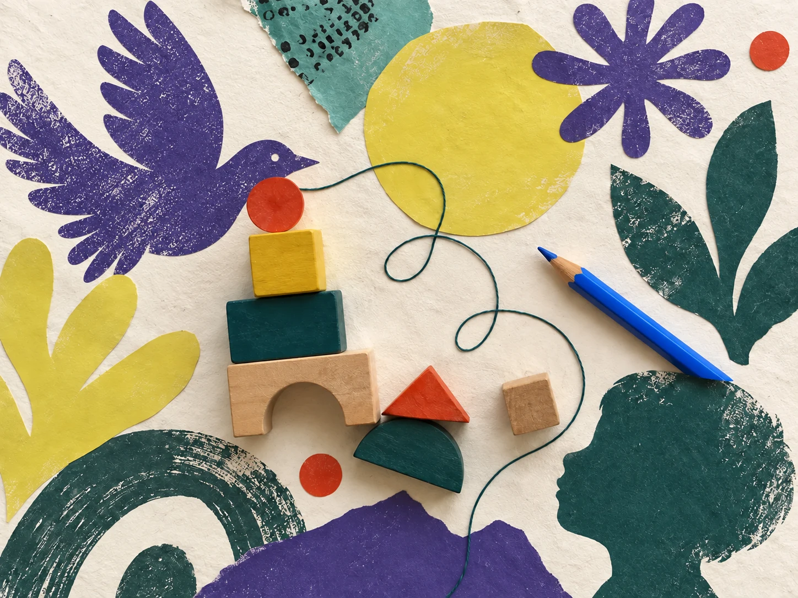

Eigenständig denken
Die Kinder lernen, eigenständig zu denken, Zusammenhänge zu erkennen, Lösungswege zu entwickeln und Fehler als Lernchancen zu nutzen.
Der Lernbus ist ein präventives, pädagogisch fundiertes Förderangebot für Kinder im frühen Lernalter.
Der Lernbus stärkt Kinder darin, ihre persönliche Entwicklung selbstbewusst, eigenständig und zukunftsorientiert zu gestalten.
Lektion anfragen
Warum der Lernbus
Deshalb schauen wir nicht erst hin, wenn ein Kind beim Lesen, Schreiben oder Rechnen bereits Schwierigkeiten hat.
Lernen baut auf vielen grundlegenden Fähigkeiten auf: Wahrnehmung, Aufmerksamkeit, Sprache, mathematische Vorläuferfähigkeiten, Motorik und Selbstregulation.
Diese Grundlagen lassen sich schon früh spielerisch, mit Freude und ohne Druck stärken, oft ganz nebenbei und ohne dass es sich für Kinder nach «Lernen» anfühlt. Ob beim Gestalten, Bewegen, Sortieren, Reimen, Experimentieren oder Spielen: Es gibt unzählige Möglichkeiten, Kinder in ihrer Entwicklung zu begleiten und wichtige Lernvoraussetzungen zu stärken.
Vorschulförderung bedeutet für uns, nicht Schule immer weiter nach vorne zu verlagern, sondern Kindern ein stabiles Fundament mitzugeben, auf dem späteres Lernen aufbauen kann. Nicht warten, bis Defizite sichtbar werden.
Der Lernbus orientiert sich an zentralen Kompetenzen wie emotionaler Intelligenz, Kreativität, Kommunikationsfähigkeit sowie kritischem und vernetztem Denken.
Die Kinder lernen, eigenständig zu denken, Zusammenhänge zu erkennen, Lösungswege zu entwickeln und Fehler als Lernchancen zu nutzen.
Sie erhalten Strategien, um sich auch nicht sofort spannende Lerninhalte aktiv zu erschliessen und bei Unlust dranzubleiben.
Parallel dazu können auch Defizite in den sprachlichen und mathematischen Grundkompetenzen gezielt aufgearbeitet und gefestigt werden.
Die frühe Deutschförderung unterstützt Kinder ab 3 Jahren dabei, sprachliche Grundlagen aufzubauen, sich sicherer auszudrücken und mit mehr Vertrauen am Unterricht teilzunehmen.
Das Angebot stärkt die Kinder in ihrem Selbstvertrauen, ihrer Resilienz und ihrer Bereitschaft zum eigenständigen Lernen.
Die Ziele


Seit meinem 16. Lebensjahr arbeite ich mit Kindern in Kindertagesstätten. Zunächst war ich als Miterzieherin tätig. Anschliessend habe ich 14 Jahre lang selbstständig in Co-Leitung die Kita Schnäggi geführt.
Im Laufe meiner beruflichen Tätigkeit habe ich verschiedene Weiterbildungen absolviert, unter anderem als Berufsbildnerin sowie im Bereich der frühen Sprachförderung mit Schwerpunkt Deutsch. Zudem bin ich Mutter von zwei bereits erwachsenen Kindern und einem achtjährigen Kind.
Die Bedeutung der frühen Bildung und Förderung wird in unserer Gesellschaft nach wie vor nicht ausreichend anerkannt. In meiner 30-jährigen Arbeit habe ich festgestellt, dass es vor allem eines braucht, um Kinder gezielt und individuell zu fördern: Zeit.
Zeit, in der ein Kind sich ausprobieren darf. Und Zeit, in der ein Erwachsener liebevoll, spielerisch und fachlich fundiert mit dem Kind grundlegende Fähigkeiten übt und stärkt.
Mit dem Lernbus schaffen wir genau diesen Raum und diese Zeit, damit Kinder individuell begleitet und gezielt in ihren Kernkompetenzen gestärkt werden können.
Jedes Kind und jeder Mensch ist einzigartig. Es gibt nicht die eine Massnahme, die einem Kind beispielsweise hilft, dranzubleiben, wenn etwas gerade nicht gelingt. Mit Zeit, professionellem Wissen und einer liebevollen Haltung ist es jedoch möglich, gemeinsam mit dem Kind herauszufinden, was es braucht, und dies nachhaltig zu integrieren.
Kennenlerngespräch mit den Eltern und dem Kind
Individuelle Frühförderung (60 Minuten, im Einzel- oder Zweiersetting; Buchung pro Schulsemester)
Aufbau grundlegender Fähigkeiten: Wahrnehmung, Aufmerksamkeit, Sprache, mathematische Vorläuferfähigkeiten, Motorik und Selbstregulation
Vertrauensvoller, geschützter Lernraum
Lernkiste zur persönlichen Dokumentation von Lernfortschritten
Elterngespräche sowie bedarfsgerechte Unterstützung von Kind und Eltern, einschliesslich Gesprächsbegleitung
Kleingruppen in den Schulferien zur Festigung und Vertiefung verschiedenster Fähigkeiten
Beiträge
Die Beiträge gelten pro Lektion von 60 Minuten, im Zweiersetting pro Kind. Welcher Tarif passt, besprechen wir im Kennenlerngespräch.
| Tarif | Einzellektion | Zweierlektion pro Kind |
|---|---|---|
| FördertarifFür Familien, bei denen das Geld knapp ist. Ermöglicht durch Menschen, die in Kinder investieren. | CHF 10 | CHF 10 |
| ReduziertFür Familien, die den vollen Beitrag nicht tragen können. | CHF 75 | CHF 60 |
| KostenwahrheitDeckt die Vollkosten eines Platzes: Lektion, Vorbereitung, Elterngespräche und Qualitätssicherung. | CHF 100 | CHF 75 |
| SolidarischMehr, als ein Platz kostet. Der Mehrbetrag fliesst vollständig in Förderplätze. | CHF 125 | CHF 90 |
Wählen Sie den Termin, der Ihnen passt für die Lektion. Wir kontaktieren Sie dann für ein Kennenlerngespräch.
Die Online-Terminbuchung wird gerade eingerichtet.
Bis die Termine freigeschaltet sind, erreichen Sie uns direkt per E-Mail.
Lektion per E-Mail anfragenNennen Sie uns gerne zwei oder drei passende Zeiten. Der Termin steht, sobald wir ihn gemeinsam bestätigt haben.
Der Buchungskalender wird erst auf Ihren Wunsch geladen. Dabei wird eine Verbindung zum Buchungsdienst hergestellt.
Falls der Kalender nicht angezeigt wird, öffnen Sie ihn direkt oder schreiben Sie uns.
Kalender in einem neuen Tab öffnenDer Kalender ist gerade nicht erreichbar. Bitte versuchen Sie es erneut oder kontaktieren Sie uns per E-Mail.
Jeweils eine Stunde, Schweizer Zeit. Der Kalender zeigt die aktuell freien Termine.
Kontakt
Für Fragen zum Lernbus schreiben Sie uns eine Nachricht. Wir melden uns innert weniger Tage.
info@lernbus.chIhre Nachricht wird direkt an info@lernbus.ch übermittelt. Datenschutz zum Kontaktformular
Nicht im üblichen Sinn. Wir arbeiten an Lücken, wenn welche da sind. Vor allem aber geht es darum, dass Ihr Kind gern und selbstständig lernt. Das hält länger als jedes einzelne Thema.
Nein. Der Lernbus steht allen Kindern offen, unabhängig davon, was sie mitbringen und woher sie kommen. Wir setzen bewusst früh an, um Selbstvertrauen und Lernfreude zu erhalten und zu stärken.
Kleine Kinder lernen im Spiel und in einer sicheren Beziehung, und genau dort setzen wir an. Es geht darum, dass Lernen von Anfang an mit Freude verbunden bleibt und auf verschiedene Arten und Wege stattfinden kann.
Weil Vertrauen Zeit braucht. Die Wirkung entsteht nicht aus der einzelnen Übung, sondern aus einer verlässlichen Beziehung und einer Begeisterung für das Kind und seinen Lernweg. Die Lektionen werden pro Schulsemester gebucht.
Mentorinnen und Mentoren mit unterschiedlichen fachlichen Hintergründen. Sie werden sorgfältig und nach höchsten Ansprüchen ausgewählt. Die Qualität wird laufend durch Teamsitzungen, fachlichen Austausch, Evaluation und Weiterbildung gesichert.
Beides ist möglich. Manche Kinder arbeiten konzentrierter allein, andere blühen zu zweit auf, weil Erklären und Zuhören selbst Lernen sind. Was für Ihr Kind passt, entscheiden wir gemeinsam im Kennenlerngespräch. Einzel- und Zweierlektionen werden jeweils pro Schulsemester gebucht.
In den Ferien gibt es Kleingruppen für Kinder, die der Lernbus begleitet. Sie vertiefen und festigen, was während des Semesters erarbeitet wurde.
Die Mentorinnen und Mentoren arbeiten reflektiert, empathisch und fachlich fundiert. Durch ihre pädagogische Ausbildung und Erfahrung können sie an die individuellen Interessen und Bedürfnisse der Kinder anknüpfen.
Die Qualität des Angebots wird gesichert und laufend weiterentwickelt.
Wer dahintersteht
Die Lerngesellschaft ist ein Verein mit Sitz in Basel. Sie fördert die natürliche Neugier und den Lernwillen von Kindern und Jugendlichen. Der Vorstand arbeitet ehrenamtlich.